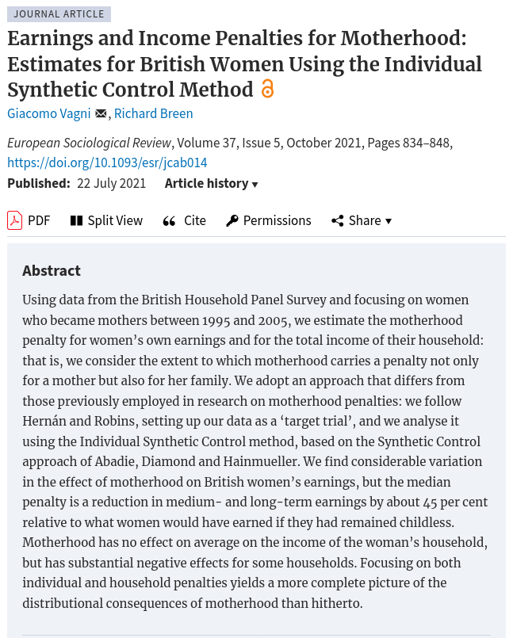
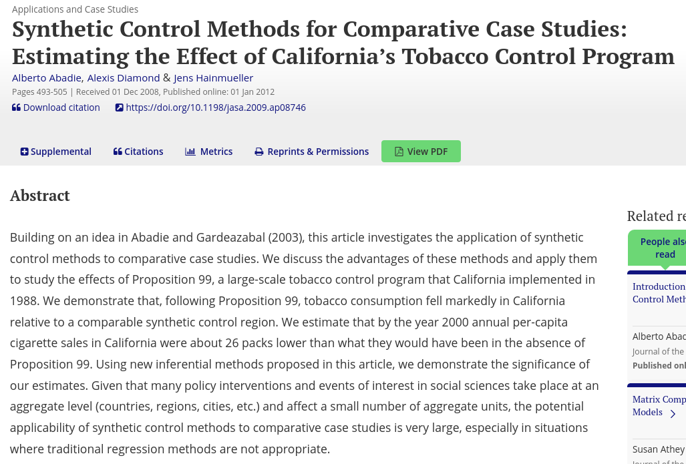
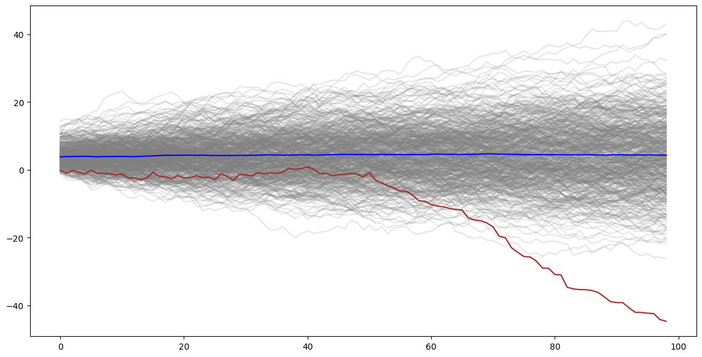
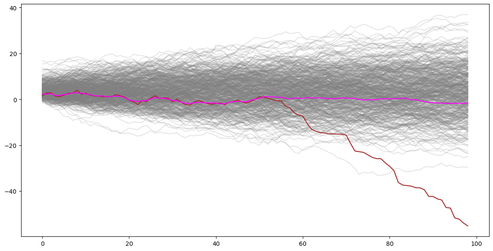
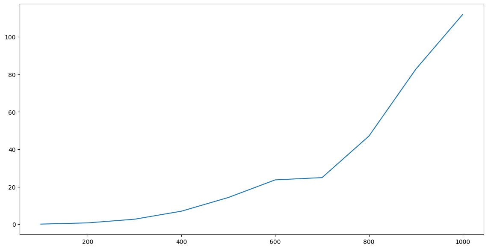
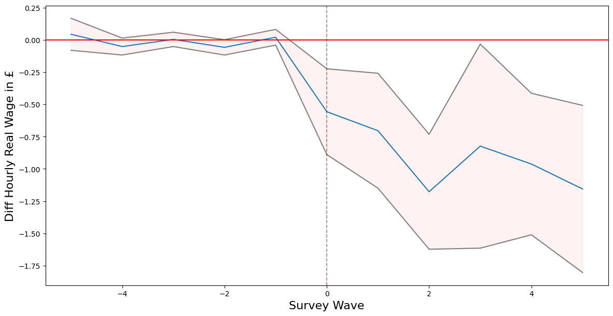

Charles Rahal1, 2
Daniel Valdenegro1, 2
1Leverhulme Centre for Demographic Science, University of Oxford
2Centre for Care, University of Oxford
Giving a standar multiple linear regresion model:
$$ Y_i = \alpha_0 + \beta_1X_{i,1} + \sum_{k=2}^{K}\beta_kX_{i,k} +\sum_{j=1}^{J}\lambda_{j}c_{i,j} + \epsilon_i $$
For each observation $i = 1, \dots, N$ with $\{x_{i,1}, \dots x_{i,K}\} \in X$ being a fixed set of predictors, our approach allows us to:
$$ Y_i = \alpha_0 + \textcolor{red}{\beta_1X_{i,1}} + \sum_{k=2}^{K}\beta_kX_{i,k} +\sum_{j=1}^{J}\lambda_{j}c_{i,j} + \epsilon_i $$
$$ Y_i = \alpha_0 + \beta_1X_{i,1} + \textcolor{red}{\sum_{k=2}^{K}\beta_kX_{i,k}} +\sum_{j=1}^{J}\lambda_{j}c_{i,j} + \epsilon_i $$
$$ Y_i = \alpha_0 + \beta_1X_{i,1} + \sum_{k=2}^{K}\beta_kX_{i,k} + \textcolor{red}{\sum_{j=1}^{J}\lambda_{j}c_{i,j}} + \epsilon_i $$
$$ \textcolor{red}{Y_i} = \alpha_0 + \beta_1X_{i,1} + \sum_{k=2}^{K}\beta_kX_{i,k} + \sum_{j=1}^{J}\lambda_{j}c_{i,j} + \epsilon_i $$
$$ Y_i = \alpha_0 + \beta_1X_{i,1} + \sum_{k=2}^{K}\beta_kX_{i,k} + \sum_{j=1}^{J}\lambda_{j}c_{i,j} + \epsilon_i $$
The user-facing code looks like this:
from nrobust.models import OLSRobust
import pandas as pd
import numpy as np
import matplotlib.pyplot as
df = pd.read_csv('Guber1999data.csv')
x = ["Spend"]
c = ["StuTeaRat", "Salary", "PrcntTake"]
y = ["SATT"]
example = OLSRobust(y=y, x=x, data=df)
example.fit(controls=c,
draws=500,
replace=True)
results = example.get_results()
fig, ax1, ax2, ax3 = results.plot(specs=[["PrcntTake", "Salary"]],
ic='bic')
plt.show()
We draw inspiration from this amazing paper:
...Which in turns draw inspiration from this other amazing paper:
Asumming we have time series data from a unit that received some "treatment" at some time "T0", and data from units that didn't recived the treatment, the idea is to create an equivalent "control" unit based on the data from the untreated units. This synthetic control should behave very similar to the trated unit up until the moment of treatment, where it should behave as if nothing has happaned.
The synthetic control method proposed that a weighted sum of similar untreated units might aproximate well to an untreated version of our unit of interest: \[ \begin{equation} \hat{Y}_{0_{t}}(0) = \mu + \sum^{N}_{i=1}\omega_{i} \cdot Y_{i_{t}} \end{equation} \] Meaning that a series of weights $\omega$ for every control units, multiplied to the value of $Y$ of each control unit $i$ at every step $t$ will yield the value $\hat{Y}_{0}(0)$ of our synthetic untreated unit for every step $t$.
Now, intuitively, the next step is to figure out a way to find the correct weights $\omega_{i}$ and $\mu$. Since we are mostly interested in finding a synthetic control for a treated unit that is equivalent up to the moment of the treatment, we should only take into account the data up to $T_{0}$ to create the weights. More formally, we are interested in finding a vector of weights that minimises the difference between our treated unit and the synthetic control: $$ \begin{equation} (\hat{\mu}, \hat{\omega}) = \underset{\mu, \omega}{\operatorname{argmin}} \sum_{t=1}^{T_{0}}\left(Y_{0_{t}} - \mu - \sum^{N}_{i=1}\omega_{i} \cdot Y_{i_{t}} \right)^{2} \end{equation} $$
The above expression is essentially a least squares solution to the problem. However, there is reason to avoid OLS, one of them being overfitting. One of the ways to prevent such problem is to impose some restrictions: $$ \begin{equation} (\hat{\mu}, \hat{\omega}) = \underset{\mu, \omega}{\operatorname{argmin}} \sqrt{\sum_{t=1}^{T_{0}}\left(Y_{0_{t}} - \mu - \sum^{N}_{i=1}\omega_{i} \cdot Y_{i_{t}} \right)^{2}} \\ \end{equation} $$ $$ \textrm{s.t.} \quad \mu=0; \quad \sum^{N}_{i=1}\omega_{i}=1; \quad \textrm{and} \quad \omega_{i} \ge 0 \quad \forall i $$ In other words, no intercept, all weights must sum to 1, and no-negative weights.
import random
import math
import pandas as pd
import matplotlib.pyplot as plt
def gen_data(steps, cases):
X = list(range(1,steps))
c = []
for i in range(0, cases):
y = []
py = random.gammavariate(2, 2)
for x in X:
yi = py + random.gauss(0, 1)
py = yi
y.append(yi)
c.append(y)
df = pd.DataFrame(c).T
df.columns = [f'c{x}' for x in range(1, cases+1)]
t = []
py = 0
for i, x in enumerate(X):
if i <= 50:
yi = py + random.gauss(0, 1)
py = yi
else:
yi = py - random.gammavariate(1,1)
py = yi
t.append(yi)
T = pd.Series(t)
df['t'] = T
return df

def argmin_w(W, Y_i, Y_0):
return np.sqrt(np.sum((Y_0 - Y_i.dot(W))**2))
def get_w(Y_i, Y_0):
w_start = [1/Y_i.shape[1]]*Y_i.shape[1]
weights = minimize(partial(argmin_w, Y_i=Y_i, Y_0=Y_0),
np.array(w_start),
method='SLSQP',
constraints=({'type': 'eq',
'fun': lambda x: np.sum(x) - 1}),
bounds=[(0.0, 1.0)]*len(w_start),
)
return weights.x
weights = get_w(Y_i, Y_0)
synth = df.drop(columns='t').dot(weights)


It takes around 2 minutes to find the weights on a sample of a conservative 1000 cases over 100 steps (or 10 covariates with 10 steps) for 1 treated case. For a conservative ~200 treated cases, this would take 6 hours. If we want to bootstrap, could take days.
We propose to reduce the numbers of controls cases on which to look-up to save computational time, by first running nearest-neighbors algorithm and select the 50 nearest. This makes the process ~100 times fasters.

Collaboration with Shefield City Council to analysis data collected by care providers and smart home devices, in oder to produce predictive models of care events.
The goal of this is the creating of a tool that allows for predicting medium to long term scenarios on care demand and provision in the UK, based on possible demographic and economic variations.